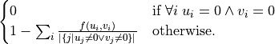
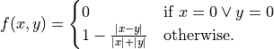
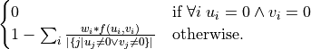

Metrics¶
pairwise_distances¶
- qbindiff.passes.metrics.pairwise_distances(X, Y, metric: Distance = Distance.euclidean, *, n_jobs=None, **kwargs)[source]¶
Compute the distance matrix from a vector array X and Y. The returned matrix is the pairwise distance between the arrays from both X and Y.
In addition to the scikit-learn metrics, the following ones also work with sparse matrices: ‘canberra’
The backend implementation of the metrics rely on scikit-learn, refer to the manual of sklearn for more information:
https://scikit-learn.org/stable/modules/generated/sklearn.metrics.pairwise_distances.html
WARNING: if the metric is a callable then it must compute the distance between two matrices, not between two vectors. This is done so that the metric can optimize the calculations with parallelism.
- Parameters:
X – ndarray of shape (n_samples_X, n_features). The first feature matrix.
Y – ndarray of shape (n_samples_Y, n_features), The second feature matrix.
metric – qbindiff.Distance, default=Distance.euclidean The metric to use when calculating distance between instances in a feature array. The implementation of the metric might relybe provided by scikit-learn
n_jobs –
int, default=None The number of jobs to use for the computation. This works by breaking down the pairwise matrix into n_jobs even slices and computing them in parallel.
Nonemeans 1 unless in ajoblib.parallel_backendcontext.-1means using all processors.**kwargs – optional keyword parameters Any further parameters are passed directly to the scikit-learn implementation of pairwise_distances if a sklearn metric is used, otherwise they are passed to the callable metric specified.
- Return D:
ndarray of shape (n_samples_X, n_samples_Y) A distance matrix D such that D_{i, j} is the distance between the ith array from X and the jth array from Y.
haussmann¶
- qbindiff.passes.metrics.haussmann(X, Y, w=None)[source]¶
Custom distance that takes inspiration from the jaccard index and the canberra distance. If computes the distance between the vectors in X and Y using the optional array of weights w.
The distance function between two vector
uandvis the following:
where the function
fis defined like this:
If the optional weights are specified the formula becomes:

- Parameters:
X – array-like of shape (n_samples_X, n_features) An array where each row is a sample and each column is a feature.
Y – array-like of shape (n_samples_Y, n_features) An array where each row is a sample and each column is a feature.
w – array-like of size n_features. The weights for each value in
XandV. Default is None, which gives each value a weight of 1.0
- Return D:
ndarray of shape (n_samples_X, n_samples_Y) D contains the pairwise haussmann distances.
When X and/or Y are CSR sparse matrices and they are not already in canonical format, this function modifies them in-place to make them canonical.
canberra_distances¶
- qbindiff.passes.metrics.canberra_distances(X, Y, w=None)[source]¶
Compute the canberra distances between the vectors in X and Y using the optional array of weights w.
- Parameters:
X – array-like of shape (n_samples_X, n_features) An array where each row is a sample and each column is a feature.
Y – array-like of shape (n_samples_Y, n_features) An array where each row is a sample and each column is a feature.
w – array-like of size n_features. The weights for each value in
XandV. Default is None, which gives each value a weight of 1.0
- Return D:
ndarray of shape (n_samples_X, n_samples_Y) D contains the pairwise canberra distances.
When X and/or Y are CSR sparse matrices and they are not already in canonical format, this function modifies them in-place to make them canonical.